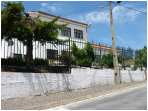

Ameaça de boicote às eleições devido ao fecho de escolas
Em Vales do Rio, povo pode não votar no domingo
publicado em: Domingo, 25 de Maio de 2014
|
|
|
|
Crónica Semanal Antes pelo contrário |


Video da semana